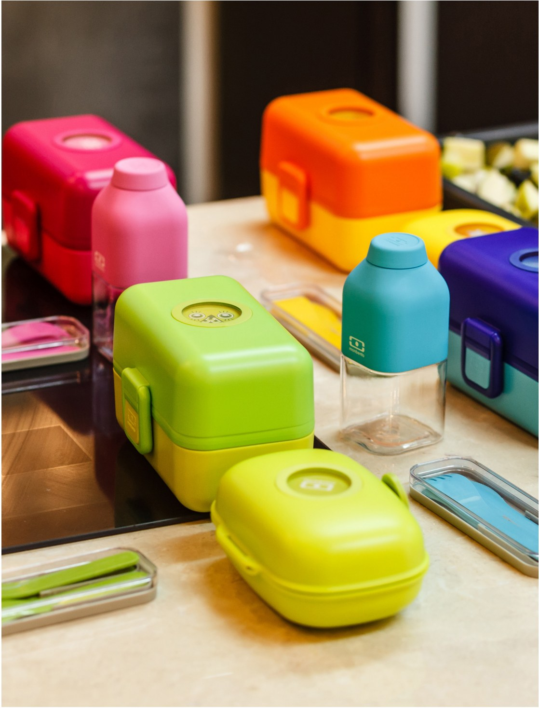

Задумывая эту тему для клуба, я представляла себе, прежде всего, вкусные и полезные перекусы для детей, которые они могут брать с собой в школу. Но затем поняла, что в наше насыщенное событиями время взрослые не меньше детей нуждаются в том, чтобы взять собой и съесть на работе что-то получше, чем покупной «картонный» сэндвич.
И главное, что я хочу подчеркнуть: неважно, идет ли речь о перекусах для детей или взрослых, — установка «я быстренько сделаю что-то простое, кину в сумку, и отлично» здесь не работает. Если вы хотите, чтобы перекус был не только вкусным, но и полезным, придется его специально готовить. Поэтому, если вы хотите сэкономить время и силы, на мой взгляд, самая верная стратегия — готовить обычную еду с запасом и брать с собой либо то, что можно разогреть, либо такую еду, которая хороша и в холодном виде.
Условно перекусы можно разделить на следующие группы: то, что осталось от ужина (котлеты, птица, запеченные овощи); сэндвичи или бутерброды с намазками, рыбой, птицей или мясом; то, что можно завернуть в лаваш или тортилью, положить в питу; то, что можно смешать (гранола + йогурт; салат + заправка); не текучие салаты типа картофельного, с фасолью, винегрета; специально приготовленные блюда (несладкие маффины, омлет, террин, фриттата, запеканка); свежие овощи или гриссини с дипом (хумус, мусс из баклажанов, овощной паштет).
Приведу пример «конструктора» ланчбокса, который я собираю мужу на завтрак или обед: яйца вкрутую (я поливаю их оливковым маслом, чтобы не было запаха, и посыпаю заатаром); свежие овощи (разрезанные пополам помидоры черри, брусочки огурца, полоски сладкого перца — слегка солю и сбрызгиваю оливковым маслом); ломтики феты; омлет типа японского с соевым соусом — лично мой любимый перекус; котлеты (любые хорошо приготовленные котлеты прекрасны и в холодном виде); куриная грудка (правильно приготовленная, нежная и сочная — чудо как хороша с соевым соусом или любой заправкой в азиатском стиле).
Своим детям в школу чаще всего я даю бутерброды. Стараюсь покупать цельнозерновой хлеб и обязательно класть лист салата. Нарезаю яблоко или кладу в ланчбокс горсть сухофруктов.
Любые блюда с жидким соусом. Рыбные блюда, если вы собираетесь их разогревать — людям рядом может не понравиться рыбный запах. Супы, за исключением случая, если у вас есть специальный герметично закрывающийся контейнер или термос. Фрукты и ягоды с заправкой или подсластителем — любые подобные добавки вызывают выделение сока.
Наиболее безвредны металлические, но у меня был с ними неудачный опыт — они не герметичны и часто протекают, поэтому годятся только для сухой еды. Та же проблема и с деревянными емкостями. Поэтому я пользуюсь пластиковыми контейнерами с герметично закрывающейся вакуумной крышкой с клапаном.
Мне нравятся ланчбоксы французской фирмы Monbento. Мало того что эти контейнеры удобные, они еще и красивые. Компания постоянно выпускает на рынок новинки с интересными рисунками и дизайнами.
Разрезать пополам мягкий бейгл или булочку, слегка подпечь со стороны разреза на сухой сковородке и очень тонким слоем смазать васаби. Смешать пару столовых ложек сливочного сыра с несколькими горошинами зеленого перца (он продается в рассоле) или каперсами и рубленым укропом по вкусу. Смазать сыром с добавками нижнюю часть бейгла или булочки, выложить сверху ломтики филе копченого лосося и накрыть верхней частью.
На 12–15 штук: 10 фиников без косточек; 1 ч. л. тертого свежего имбиря; 2 ст. л. кокосового масла; 1 банка (200 г) ореховой пасты; 80 г тыквенных семечек; щепотка соли; 80 г воздушной киноа; маленькая горсть рубленого миндаля; 100 г темного шоколада; 50 г кокосовой стружки.
Финики измельчить с имбирем и кокосовым маслом в кухонном комбайне. Переложить в кастрюлю, добавить ореховую пасту, готовить, помешивая, на слабом огне до однородной массы. Снять с огня, вмешать семечки, соль, киноа и рубленый миндаль. Шоколад растопить на паровой бане. Прямоугольную форму выложить бумагой для выпечки. Выложить смесь и утрамбовать руками. Залить шоколадом, посыпать кокосовой стружкой и положить в морозилку или холодильник до застывания. Затем разрезать на батончики.
На 10–12 штук: 200 г киноа; 100 г шпината; 3 яйца; 200 г феты или козьего/овечьего сыра; кокосовое масло для жарки; соль, свежемолотый черный перец.
Для соуса: 1 спелое авокадо; сок 1 лайма; 100 г натурального жирного йогурта; 1 зубчик чеснока.
Отварить киноа: залить 500 мл воды, посолить, довести до кипения, уменьшить огонь и варить 15 минут. Охладить.
В миске смешать киноа, рубленый шпинат, яйца, размятую фету, соль и перец. Сформовать «пирожки» и либо обжарить по несколько минут с каждой стороны на кокосовом масле, либо выложить на смазанный маслом противень и выпекать 10 минут в духовке при 180 °С. Для соуса взбить все ингредиенты в блендере.
На 12–15 штук: 200 г круглозерного, желательно бурого риса; щепотка соли; 50 г кунжута; 50 г конопляных семечек или хлопьев миндаля (по желанию); несколько перьев зеленого лука (по желанию).
Начинка по вкусу: авокадо, рыба, приготовленный фарш.
Замочить рис на 1 час, если есть время. Слить воду, залить рис водой (400–500 мл), добавить соль, довести до кипения под крышкой, уменьшить огонь и варить до готовности, пока вся вода не впитается, примерно 40 минут. Дать остыть. Обжарить кунжут на сухой сковородке до золотистого цвета, всыпать в рис, перемешать. По желанию добавить мелко нарубленный зеленый лук, семена конопли или миндальные хлопья. Скатать шарики, используя чашечку и пищевую пленку: отрезать кусок пленки, положить в маленький стаканчик, выложить часть риса, внутрь положить начинку, закрыть небольшим количеством риса, завернуть пленку в кулечек, формируя шарик.